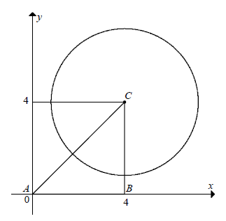

Matura rozszerzona - kurs - część 41 - zadania
Narysuj w układzie współrzędnych następujące zbiory: \((x+1)^2+(y+1)^2\le 25\) oraz
\(y\ge \frac{1}{7}x+2\frac{5}{7}\) i oblicz pole figury \(F\), która jest częścią wspólną
narysowanych zbiorów.
\(\frac{25}{4}(\pi -2)\)
Okręgi \(o_1\) i \(o_2\) są dane, odpowiednio, równaniami \(x^2+y^2=1\) oraz
\((x-6)^2+(y-3)^2=5\). Środki tych okręgów połączono odcinkiem, który przecina okrąg \(o_1\) w
punkcie \(A\) oraz okrąg \(o_2\) w punkcie \(B\). Wyznacz współrzędne środka odcinka \(AB\).
\(\left(2+\frac{1}{\sqrt{5}},1+\frac{1}{2\sqrt{5}}\right)\)
Dany jest okrąg o równaniu \((x-5)^2+(y-3)^2=9\). Wyznacz równania stycznych do
danego okręgu przechodzących przez początek układu współrzędnych.
\(y=0\) oraz \(y=\frac{15}{8}x\)
Dany jest okrąg \(O_1\) o równaniu \((x-3)^2+y^2=36\) oraz okrąg \(O_2\) o równaniu
\(x^2+(y-m)^2=m^2\). Dla jakich wartości parametru \(m\) okręgi \(O_1\) i \(O_2\) mają dokładnie
jeden punkt wspólny? Dla znalezionych wartości parametru \(m\) wyznacz równanie prostej
przechodzącej przez środki tych okręgów.
dla \(m=\frac{9}{4}\) mamy: \(y=-\frac{3}{4}x+\frac{9}{4}\)
dla
\(m=-\frac{9}{4}\) mamy: \(y=\frac{3}{4}x-\frac{9}{4}\)
Dany jest punkt \(A=(0,0)\). Punkt \(B\), różny od punktu \(A\), należy do okręgu o
równaniu \((x-2)^2+y^2=4\). Wykaż, że środek odcinka \(AB\) należy do okręgu o równaniu
\((x-1)^2+y^2=1\).
Prosta o równaniu \(y = x + 2\) przecina okrąg o równaniu
\((x - 3)^2 + (y - 5)^2 = 25\) w punktach \(A\) i \(B\). Oblicz
współrzędne punktów \(A\) i \(B\) oraz wyznacz równanie stycznej do danego okręgu przechodzącej
przez jeden z tych punktów.
\(y=-x+8-5\sqrt{2}\)
Na rysunku jest przedstawiony trójkąt prostokątny \(ABC\), którego wierzchołkami są
punkty \(A=(0,0)\), \(B=(4,0)\) i \(C=(4,4)\) oraz okrąg o środku \(C\), który dzieli trójkąt na
dwie figury o równych polach. Wyznacz równanie tego okręgu. 
\((x-4)^2+(y-4)^2=\frac{32}{\pi }\)
Wykaż, że jeśli prosta o równaniu \(y=kx+l\) jest styczna do okręgu o równaniu
\((x-k)^2+(y-l)^2=m^2\), gdzie \(k,l\in \mathbb{R} \) oraz \(m\gt 0\), to \(\frac{k^4}{k^2+1}=m^2\).
Wykaż, że dla dowolnych dodatnich liczb rzeczywistych \(x\) i \(y\) takich, że
\(x^2+y^2=2\), prawdziwa jest nierówność \(x+y\le 2\).